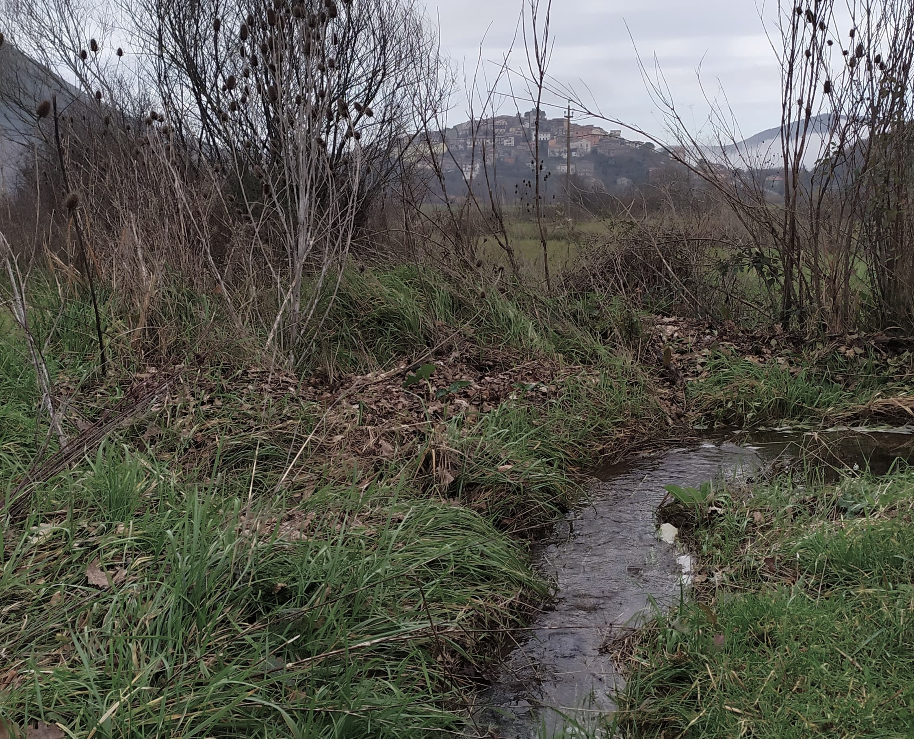
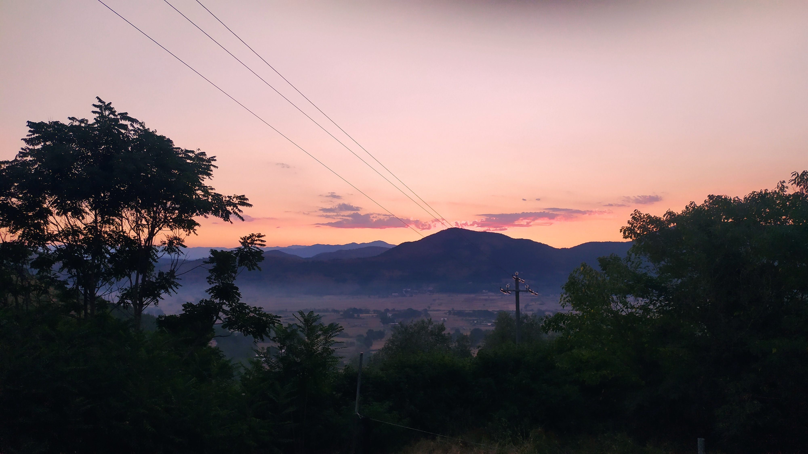

Spesso non riusciamo a percepire tutto ciò che ci circonda. Pastena nasconde un mondo che non immaginereste mai. In un tempo lontanissimo, forze oscure si sono abbattute sul paese, spiriti mai visti prima e provenienti da una dimensione apparentemente invisibile, il Sottomondo.
Il Sottomondo è Anetsap, il contrario di Pastena, una dimensione in cui le regole del mondo sono sovvertite e in cui abitano forze oscure e misteriose. Il Sottomondo è apparentemente invisibile: quando vi si accede, nulla sembra cambiare. Tuttavia, appena entrati in questa dimensione, le cose iniziano ad accadere in maniera davvero strana, le regole della fisica sono sovvertite, i corpi non seguono più le leggi della terra, il linguaggio non è più quello degli umani, lo spazio è deformato e contorto e mostruose creature iniziano a prendere vita. Sembra di vivere ancora nel mondo reale, ma qualsiasi interazione risulta completamente sconvolta.
Col tempo i primi abitanti del paese avevano imparato ad accedere a questa dimensione, ma non erano stati subito in grado di orientarsi al suo interno. Tutto poteva accadere ovunque e non c'era alcun segno lasciato sul territorio di Pastena. Così, negli anni, gli umani hanno iniziato a tracciare dei segni nello spazio e sulla carta per provare a ricordare dove si manifestasse il Sottomondo. Il paese venne diviso in cinque zone, così da poter chiamare per nome le aree di Anetsap: zona della Pianura, della Grotta, dei Casali, dei Pozzi e delle Montagne. Vennero lasciati nel territorio alcuni simboli fisici. Subito furono costruiti i santuari, dei luoghi sacri in cui negli anni c'erano state numerose manifestazioni paranormali. Diventarono presto dei luoghi di accesso al Sottomondo, dei punti da cui entrare e uscire con più facilità. Vennero costruite poi le porte, per dividere meglio le cinque zone e per accorgersi meglio di star passando da una zona all'altra. Furono segnati altri luoghi, luoghi di visioni, in cui la materia aveva iniziato a comportarsi in modo impossibile e in cui iniziarono ad essere avvistate mostruose creature.
Presto si capì che le forze sprigionate dal Sottomondo non erano solo incredibili, ma molto pericolose per il mondo reale. Via via le visioni diventarono minacciose e dannose per l'uomo, al punto di mettere in pericolo gli umani e il mondo normale. Per questo motivo, cinque valorosi decisero di entrare nel Sottomondo con l'intento di distruggerlo, poiché era diventato ormai incontrollabile. I cinque affrontarono le forze più oscure, servendosi di alcune antiche magie e incantesimi. Lo scontro tra i cinque e il Sottomondo fu tremendo, violentissimo. Iniziarono a manifestarsi dei profondi turbamenti e le visioni aumentarono giorno dopo giorno. Dopo innumerevoli tentativi, la spedizione purtroppo fallì a un passo dalla riuscita, con un ultimo incantesimo ancora da evocare.
Dei cinque valorosi, solo uno, Yachin, riuscì a riemergere dal Sottomondo in vita, mentre gli altri quattro perirono tutti. Preso dalla rabbia e dallo sconforto per la perdita dei suoi compagni, il sopravvissuto decise di chiudere definitivamente i santuari, gli antichi accessi al Sottomondo, lasciando un unico modo per entrare: il Sigillo, posseduto solamente da lui. Poco prima di morire, Yachin decise di dividere il sigillo in quattro frammenti e di disseminarli nel territorio. Voleva evitare che questo finisse nelle mani sbagliate.
Oggi il mondo è di nuovo in pericolo, minacciato dalle forze oscure del Sottomondo. L'unico modo per salvarlo è finire il lavoro iniziato tanti anni fa. Adesso a voi il l'arduo compito di ritrovare i pezzi del Sigillo e ricomporlo, in modo da entrare ancora una volta nel Sottomondo. Questo primo compito non è certo banale. Avrete a disposizione solamente l'antica mappa del Sottomondo creata dagli uomini di un tempo e le informazioni sulle Porte che sono state tramandate negli anni.
